龍王院/高知県
龍王院/高知県
高知市内からもさほど遠くない山中にある龍王院。
奈良の信貴山の別院であり、縁切りの寺としても有名なのだとか。
そんな龍王院に大観音がおわすと聞いてチョット寄ってみたよ。
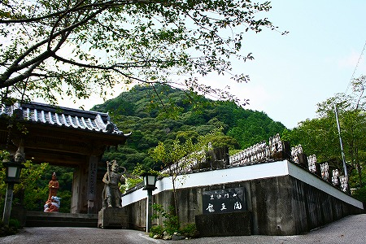
当山住職は人生指針（運勢鑑定）を毎日行っているそうです。
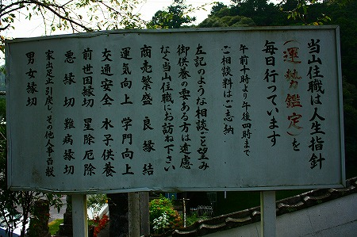
商売繁盛、良縁結といったソフトな相談から前世因縁切、悪縁切、難病縁切といったハードな相談事まで。
さらに家出足止引戻、男女縁切といったかなりハードルの高い相談まで受けてくれるようだ。
幸か不幸か世の由無し事に色々と悩むほど頭良くない私。こちらで相談するような高レベルの悩みが全然ないので、とりあえずデッカイ観音サマだけスゲースゲーと拝ませていただきましょうか…。
手作り感満点の看板がお出迎え。
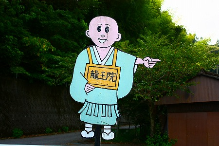
お寺全体から放出されるハードコアな雰囲気とは裏腹な看板に一瞬頬を緩めてしまう。
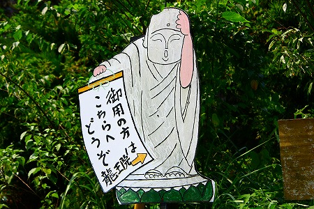
山門の向こうには早速大観音がいらっしゃるではないか！
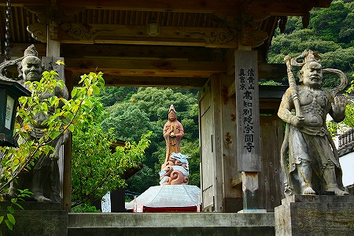
おおお、高知の山中に人知れずこんな大きな観音サマがあったのかー。
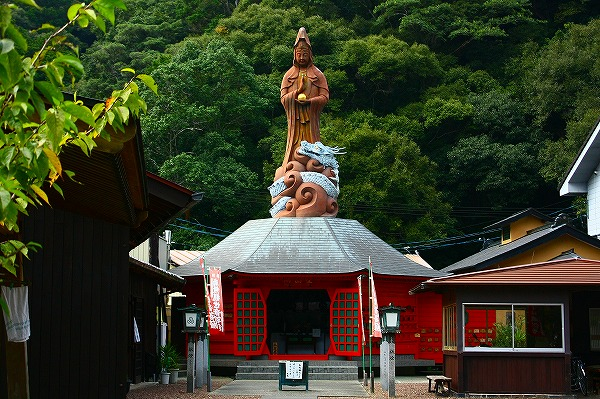
白龍観世音菩薩というそうな。
足元に龍を従えた観音サマである。
観音サマの足元は開山堂で、中に入るとめくるめく仏陀ワールドが展開されていて卒倒しそうになる。
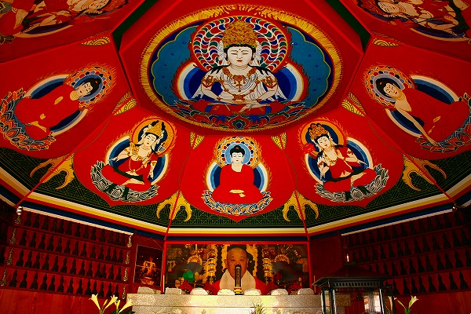
気になるのは正面のお坊さんの写真。
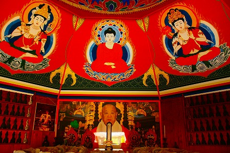
先代の住職だとか。
写真のあまりの大きさにビックリしましたよ。つかそもそも普通は仏像が安置されてるポジションだし。
コレだけの堂宇を構えるとはどんだけ高邁なお方だったのだろうか。
壁にはミニチュアの観音像がずらりと並んでいた。
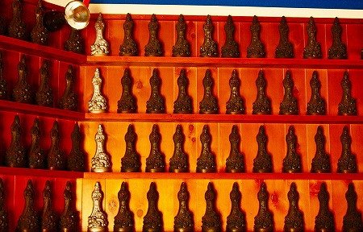
開山堂の手前には巨大な石を彫り込んだ不動明王のレリーフがあり、その先に毘沙門堂が見える。
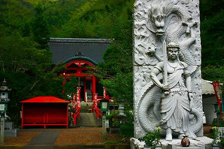
お寺的にはここがメインのお堂なのだろう。
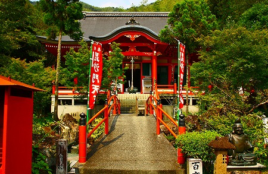
毘沙門堂へ至る橋から下を見ると枯山水状の庭があった。
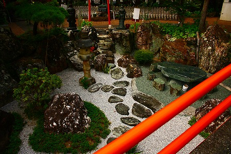
石で出来たテーブルや椅子があったので下に降りることもできるのだろう。行かなかったけど。
このお寺の本尊、毘沙門天。
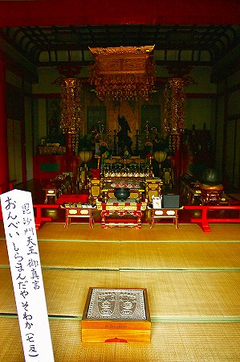
必勝毘沙門天というそうな。
さて、毘沙門堂の左手に不動洞という人工の洞窟があり、のぼりには縁切不動明王とある。
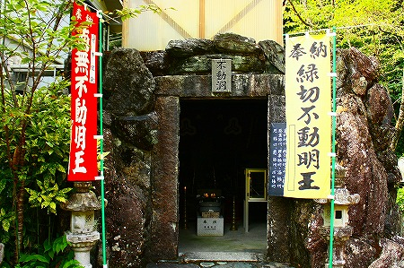
大きな観音像や毘沙門天ばかりが目立つが、この寺のひそかなメインはここなのでは、とピーンときましたよ。
なんたって縁切り寺、な訳ですから。
薄暗い洞内の中央には剣をかざした不動明王の石像があり、その周囲に何かが並んでいる。
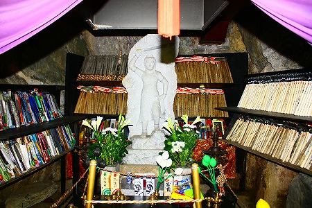
右には
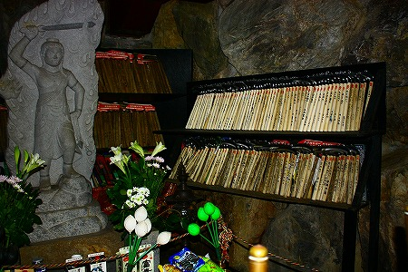
鎌！
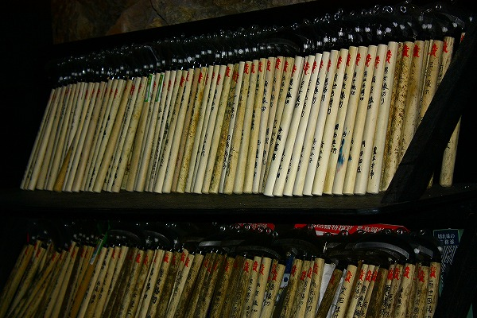
左には
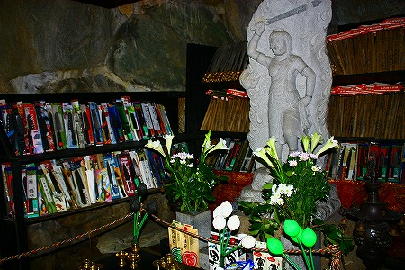
包丁！
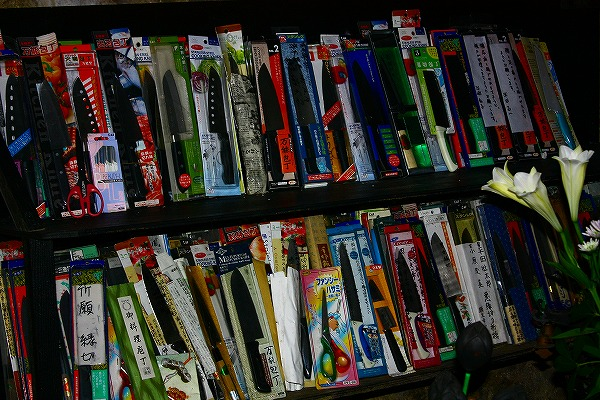
縁を切るために奉納された大量の刃物だった。
不幸、と一言でいってしまえばそれまでだが、刃物をわざわざ買ってきてまで奉納するにはそれなりの事情があるのだろう。
縁切り祈願とは基本的に不幸な状態から抜け出すための祈願であって、それはつまりマイナスの状態からニュートラルの状態に戻したい、という願いなわけですよね。
コレって例えば金持ちになりたいとか素敵な恋人が出来ますように、といったプラス方向に持っていくのとは根本的に違う種類の祈願だと思う。
例えば祈願者の置かれているポジション。
後者は叶わなくても今現在の状態がキープできればまあ、それなりに切迫した状況ではないと推察できる。
ところが前者は一刻も早く抜け出したい切羽詰った状況で、その真剣で前のめりな精神状態がこうした奉納の風景にも表れているような気がする。
ところで。
伝統的な縁切り祈願の内容といえば
痛みの伴う難病、度重なる身内の不幸、祟り、憑き物
…といった曖昧な対象が多かった。ところが、今は
家庭内暴力、町内のゴミ屋敷、ストーカー、クレーマー、炎上、いじめ
…と、その縁切り対象は人間そのものに向いている。
このように縁切り信仰といっても昔と今ではかなり様相を異にしているといえよう。
キツネから病魔、果ては引越しおばさんやモンスターペアレンツまで相手にしなければならない縁切不動明王様におかれましてはくれぐれも御身大事にされていただきたし。
山門の脇には水子地蔵が並んでいた。
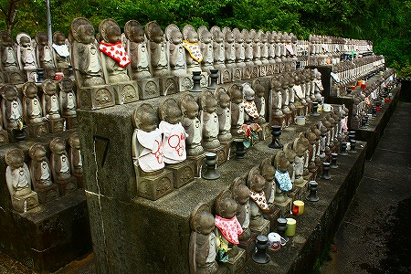
人里はなれた山中に有象無象の人々の悩みや苦しみが集積されているようでどよ〜んとした後味だけが残った。
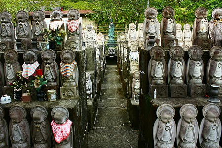
浜の真砂は尽きねども世に悩みの種は尽きまじ
2010.08.
珍寺大道場 HOME